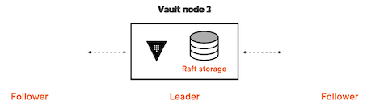
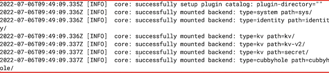

2 Managing the Storage Backend
1 Intro to Storage Backend
Storage Backend
A database in which vault stores secrets, system configurations, auth informations, etc.
Storage Backend
- Is an untrusted component
- Stores data in an encrypted form
- Is required to persist data across Vault restarts
Types of Storage Backend
- Structured databases
- Unstructured databases
- Object storage
- Key-value store
- Filesystem
Broadly categorised:
- Integrated storage backend
- External storage backend
Integrated Storage Backend
- Comes as a part of the vault server
- Uses raft consensus
- Stores data on the vault server itself
- Replicates data across replicas in cluster mode
External Storage Backend
- Hosted separately from the vault server
- Stores all the data on a different server
Comparison
Integrated storage backend
- No additional software installation required
- Just monitor the vault server
External storage backend
- External storage needs to be installed and configured
- Monitor the vault server and storage backend separately

Storage Configuration
integrated_strorage.hcl
storage "consul" {
address = "127.0.0.1:8500"
path = "vault"
}
listener "tcp" {
address = "127.0.0.1:8200"
tls_disable = 1
}
consul storage.hcl
storage "raft" {
path = "/path/to/raft/data"
node_id = "raft_node_1"
}
listener "tcp" {
address = "127.0.0.1:8200"
tls_disable = 1
}
Consul storage backend

Single Point of Failure

Vault HA Setup

values.yaml
# Vault Helm Chart Value Overrides
global:
enabled: true
tlsDisable: false
server:
readinessProbe:
enabled: true
path: "/v1/sys/health?standbyok=true&sealedcode=204&uninitcode=204"
livenessProbe:
enabled: true
path: "/v1/sys/health?standbyok=true"
initialDelaySeconds: 60
extraSecretEnvironmentVars:
- envName: AWS_ACCESS_KEY_ID
secretName: aws-secret
secretKey: AWS_ACCESS_KEY_ID
- envName: AWS_SECRET_ACCESS_KEY
secretName: aws-secret
secretKey: AWS_SECRET_ACCESS_KEY
extraEnvironmentVars:
VAULT_CACERT: /vault/userconfig/vault-tls/vault.ca
VAULT_SKIP_VERIFY: true
extraVolumes:
- type: secret
name: vault-tls
ha:
enabled: true
replicas: 3
config: |
listener "tcp" {
address = "[::]:8200"
cluster_address = "[::]:8201"
tls_cert_file = "/vault/userconfig/vault-tls/vault.crt"
tls_key_file = "/vault/userconfig/vault-tls/vault.key"
}
seal "awskms"
{
region = "us-east-1"
kms_key_id = "b7576d39-d159-46f4-b84b-33f5b618fce2"
}
storage "consul" {
path = "vault"
address = "HOST_IP:8500"
}
service_registration "kubernetes" {}
standalone:
enabled: "false"
config: |
listener "tcp" {
address = "[::]:8200"
cluster_address = "[::]:8201"
tls_cert_file = "/vault/userconfig/vault-tls/vault.crt"
tls_key_file = "/vault/userconfig/vault-tls/vault.key"
}
seal "awskms"
{
region = "us-east-1"
kms_key_id = "b7576d39-d159-46f4-b84b-33f5b618fce2"
}
storage "consul" {
path = "vault"
address = "consul-consul-server:8500"
}
ui = true
log_level = "Debug"
service:
type: LoadBalancer
annotations: |
"service.beta.kubernetes.io/aws-load-balancer-name": "vault-server"
### setup the vault address
export certificate_cn=""
export VAULT_ADDR="https://${certificate_cn}:8200"
### install the vault ha
helm install vault-ha hashicorp/vault \
--namespace vault \
--values values.yaml
### Check pods
kubectl get pods -n vault
### Get the public endpoint
kubectl get svc -n vault

Integrated Backend Setup

### Check the vault status
vault status -tls-skip-verify
Path Type Accessor Description
--- --- --- ----
...
sys/ system system_lafa27ac system endpoints used for control, policy and debugging
### set the new token
vault login -tls-skip-verify
### List key-values
vault kv list -tls-skip-verify secret/
### Remove the old standalone setup
helm delete vault -n vault
2 Choosing a Storage Backend
Switch from consul storage backend to integrated storage backend
- Achieve n-2 redundancy

- The ideal site for a vault HA cluster is 5

Consul backup snapshot
### setup the vault address
export certificate_cn=""
export VAULT_ADDR="https://${certificate_cn}:8200"
export CONSUL_HTTP_ADDR=localhost:8500
### port forward the consul service
kubectl port-forward -n vault svc/consul-consul-server 8500
$ consul snapshot save backup.snap
Saved and verified snapshot to index 59280
values.yaml
# Vault Helm Chart Value Overrides
global:
enabled: true
tlsDisable: true
server:
readinessProbe:
enabled: true
path: "/v1/sys/health?standbyok=true&sealedcode=204&uninitcode=204"
livenessProbe:
enabled: true
path: "/v1/sys/health?standbyok=true"
initialDelaySeconds: 60
extraEnvironmentVars:
VAULT_SKIP_VERIFY: true
extraSecretEnvironmentVars:
- envName: AWS_ACCESS_KEY_ID
secretName: aws-secret
secretKey: AWS_ACCESS_KEY_ID
- envName: AWS_SECRET_ACCESS_KEY
secretName: aws-secret
secretKey: AWS_SECRET_ACCESS_KEY
extraVolumes:
- type: secret
name: vault-tls
ha:
enabled: true
replicas: 3
raft:
enabled: true
config: |
listener "tcp" {
address = "[::]:8200"
cluster_address = "[::]:8201"
tls_disable = "true"
tls_cert_file = "/vault/userconfig/vault-tls/tls.crt"
tls_key_file = "/vault/userconfig/vault-tls/tls.key"
}
seal "awskms"
{
region = "us-east-1"
kms_key_id = "794c5350-d4ca-4ea0-af29-1f69e6681361"
}
storage "raft" {
path = "/vault/data"
retry_join {
leader_api_addr = "http://vault-raft-0.vault-raft-internal:8200"
leader_client_cert_file = "/vault/userconfig/vault-tls/tls.crt"
leader_client_key_file = "/vault/userconfig/vault-tls/tls.key"
}
retry_join {
leader_api_addr = "http://vault-raft-1.vault-raft-internal:8200"
leader_client_cert_file = "/vault/userconfig/vault-tls/tls.crt"
leader_client_key_file = "/vault/userconfig/vault-tls/tls.key"
}
retry_join {
leader_api_addr = "http://vault-raft-2.vault-raft-internal:8200"
leader_client_cert_file = "/vault/userconfig/vault-tls/tls.crt"
leader_client_key_file = "/vault/userconfig/vault-tls/tls.key"
}
}
service_registration "kubernetes" {}
standalone:
enabled: "false"
config: |
listener "tcp" {
address = "[::]:8200"
cluster_address = "[::]:8201"
tls_cert_file = "/vault/userconfig/vault-tls/tls.crt"
tls_key_file = "/vault/userconfig/vault-tls/tls.key"
}
seal "awskms"
{
region = "us-east-1"
kms_key_id = "794c5350-d4ca-4ea0-af29-1f69e6681361"
}
storage "consul" {
path = "vault"
address = "consul-consul-server:8500"
}
ui = true
log_level = "Debug"
service:
type: LoadBalancer
### install the vault ha
helm install vault-raft hashicorp/vault \
--namespace vault \
--values values.yaml
### List pods
kubectl get pods -n vault
...
vault-raft-0
vault-raft-1
vault-raft-2
...
### Get pvc
kubectl get pvc -n vault
data-vault-raft-0
data-vault-raft-1
data-vault-raft-2
$ vault status -tls-skip-verify
Value Key
Recovery Seal Type awskms
Sealed true
...
$ vault operator init -recovery-shares 3 -recovery-threshold 2
Recovery Key 1: 5KGmlfumJQSOfti3SF5IGEA+/tEKLg×U2H1qBaKT9P77
Recovery Key 2: Jetu/TTjh8vEj2VrfnDg4Ejm+zFYOvcjfA6X36CII161
Recovery Key 3: duy1UrybAENHhi+15Mc80104Wy72jKVB02wFweDFhpmQ
Initial Root Token: hvs.SOWH99QviJoVkS4nTkFv3Eig
...
Migrate data from consul backend
Vault Data Migration in Kubernetes
- To be inside the Vault pod
- No Vault process running
- No lock on the database
Create dummy pod
$ helm delete -n vault vault-raft
release "vault-raft" uninstalled
$ kubectl apply -n vault -f stateful.vaml
statefulset.apps/vault-raft created
stateful.vaml
apiVersion: apps/v1
kind: StatefulSet
metadata:
generation: 1
labels:
app.kubernetes.io/instance: vault-raft
app.kubernetes.io/name: vault
name: vault-raft
namespace: vault
spec:
podManagementPolicy: Parallel
replicas: 1
revisionHistoryLimit: 10
selector:
matchLabels:
app.kubernetes.io/instance: vault-raft
app.kubernetes.io/name: vault
component: server
serviceName: vault-raft-internal
template:
metadata:
creationTimestamp: null
labels:
app.kubernetes.io/instance: vault-raft
app.kubernetes.io/name: vault
component: server
helm.sh/chart: vault-0.20.1
spec:
affinity:
podAntiAffinity:
requiredDuringSchedulingIgnoredDuringExecution:
- labelSelector:
matchLabels:
app.kubernetes.io/instance: vault-raft
app.kubernetes.io/name: vault
component: server
topologyKey: kubernetes.io/hostname
containers:
- command:
- cat
tty: true
# - /bin/sh
# - -ec
image: hashicorp/vault:1.10.3
imagePullPolicy: IfNotPresent
lifecycle:
preStop:
exec:
command:
- /bin/sh
- -c
- sleep 5 && kill -SIGTERM $(pidof vault)
name: vault
ports:
- containerPort: 8200
name: https
protocol: TCP
- containerPort: 8201
name: https-internal
protocol: TCP
- containerPort: 8202
name: https-rep
protocol: TCP
resources: {}
securityContext:
allowPrivilegeEscalation: false
terminationMessagePath: /dev/termination-log
terminationMessagePolicy: File
volumeMounts:
- mountPath: /vault/data
name: data
- mountPath: /home/vault
name: home
dnsPolicy: ClusterFirst
restartPolicy: Always
schedulerName: default-scheduler
securityContext:
fsGroup: 1000
runAsGroup: 1000
runAsNonRoot: true
runAsUser: 100
terminationGracePeriodSeconds: 10
volumes:
- emptyDir: {}
name: home
updateStrategy:
type: OnDelete
volumeClaimTemplates:
- apiVersion: v1
kind: PersistentVolumeClaim
metadata:
creationTimestamp: null
name: data
spec:
accessModes:
- ReadWriteOnce
resources:
requests:
storage: 10Gi
volumeMode: Filesystem
status:
phase: Pending
kubectl get pods -n vault
....
vault-raft-0
Migrate data
### exec into pod
kubectl exec -it -n vault vault-raft-0 /bin/sh
$ cd / tmp
/tmp $
Create migration config file
vi migrate.hcl
storage_source "consul" {
address = "consul-consul-server:8500"
path = "vault"
}
storage_destination "raft" {
path = "/vault/data"
}
cluster_addr = "https://vault-raft-0.vault-raft-internal:8201"
Migrate data
vault operator migrate -config=migrate.hcl
### Delete dummy pod**
kubectl delete -n vault -f stateful.yaml
### Get pvc
kubectl get pvc -n vault
data-vault-raft-0
data-vault-raft-1
data-vault-raft-2
The data is already migrated into PV data-vault-raft
reinstall the vault ha
helm install vault-raft hashicorp/vault \
--namespace vault \
--values values.yaml
### logs
kubectl logs -n vault vault-raft-0 -f

Check Vault cluster health
### exec into pod
kubectl exec -it -n vault vault-raft-0 /bin/sh
vault status -tls-skip-verify
Key Value
Recovery Seal Type shamir
Initialized true
Sealed false
Total Recovery Shares 3
Threshold 2
Version 1.10.3
Storage Type raft
Cluster Name vault-cluster-d7110da1
Cluster ID dc36dd21-147a-8eda-a553-501ae974afbb
HA Enabled true
HA Cluster https://vault-raft-0.vault-raft-internal:8201
HA Mode active
Active Since 2022-07-06T09:49:09.331675004z
Raft Committed Index 69
Raft Applied Index 69
vault secrets list -tls-skip-verify
Error listing secrets engines：Error making API request.
URL: GET https://127.0.0.1:8200/v1/sys/mounts
Code:403，Errors:
* permission denied
Login into the Vault
vault login
token: hvs.h4xour1BVcxSaVIJmaih7k30
### List the secrets
vault secrets list -tls-skip-verify
vault kv list -tls-skip-verify secret/
### Initiate the vault server
vault operator init -recovery-shares 3 -recovery-threshold 2
### Exec into 2nd and 3rd vault pod
kubectl exec -it -n vault vault-raft-1 /bin/sh
kubectl exec -it -n vault vault-raft-2 /bin/sh
### Unseal the vault server
vault operator raft join https://vault-raft-0.vault-raft-internal:8201
vault operator unseal
### Check cluster status
vault operator raft list-peers
Vault Backups
-
Mitigate
- Single point of failure, dependency, and migration
-
Not a full proof solution
-
What if data is corrupted?

Backup
- Regular snapshots protect from uncertainties
- Is recommended
- Before upgrades
- Before Migration
- Any significant change
Is not recommended during write operation
### setup the vault address
export certificate_cn=""
export VAULT_ADDR="https://${certificate_cn}:8200"
### Get the public endpoint
kubectl get svc -n vault
...
vault-raft LoadBalancer 10.100.220.50 a0f403f1d78564986bd18f7eddac7c51-130545175.us-east-1.elb.amazonaws.com
...
export certiticate_cn="a0f403f1d78564986bd18f7eddac7c51-130545175.us-east-1.elb.amazonaws.com"
### Snapshot of the raft storage backend
vault operator raft snapshot save backup.snap
Restore the snapshot when needed

### restore the snapshot
vault operator raft snapshot restore -force <snapshot-name>
### Automate the vault snapshot
vault write sys/storage/raft/snapshot-auto/config/testsnap \
storage_type=local \
file_prefix=testsnappy \
interval=120m \
retain=7 \
local_max_space=1000000 \
path_prefix=/opt/vault/